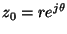

|
You are here : Control System Design - Index | Book Contents | Appendix C | Section C.8.4 C. Results From Analytic Function TheoryC.8.4 Poisson-Jensen Formula for the unit diskLemma C.2 Consider a function g(z) with the following properties
Consider also a point  such that r < 1, then
Proof Let
Then,
We also recall that if x is any complex number, then . Thus the result follows on equating real parts in the equation above and on noting that
Theorem C.11 (Jensen's formula for the unit disk) Let f(z) and g(z) be analytic functions on the unit disk. Assume that the zeros of f(z) and g(z) on the unit disk are and respectively, where none of these zeros lie on the unit circle. If
then
Proof We first note that . We then apply the Poisson-Jensen formula to f(z) and g(z) at z0 = 0 to obtain
We thus have that
The result follows on subtracting equation (C.8.35) from (C.8.34), and on noting that
Remark C.3 Further insights can be obtained from equation (C.8.32) if we assume that, in (C.8.32), f(z) and g(z) are polynomials, i.e.
Then
Thus, and are all the zeros and all the poles of h(z), respectively, which have nonzero magnitude. This allows equation (C.8.32) to be rewritten as
where and are the zeros and the poles of h(z), respectively, which lie outside the unit circle .
|